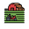

Detalhes da Obra
Selecione uma obra no mapa ou clique em "Mais Informações" no popup para ver os detalhes completos aqui.
Filtros de Pesquisa
Legendas
SITUAÇÃO
 Concluído
Concluído
Em Desenvolvimento
 Não Iniciada
Não Iniciada
Paralisado
 Sem Evolução
Sem Evolução
Cancelada
EIXOS

Desenvolvimento Rural
Desenvolvimento Social
Desenvolvimento Econômico
Educação
Governadoria
Infraestrutura
Meio Ambiente
Saúde
Segurança
Sobre a Plataforma
O Mapa de Obras do Piauí é uma ferramenta interativa desenvolvida para promover a transparência e facilitar o monitoramento dos investimentos públicos no estado.
Através desta plataforma, o cidadão pode visualizar, de forma georreferenciada, a distribuição das obras e intervenções de infraestrutura em todos os municípios piauienses.
Nossos objetivos:
- 👁️ Transparência:
Disponibilizar dados claros sobre valores, prazos e execução física. - 📈 Monitoramento:
Permitir o acompanhamento do status real de cada empreendimento (em andamento, concluído, paralisado). - 🤝 Controle Social:
Fornecer informações para que a sociedade participe ativamente da fiscalização dos recursos públicos.